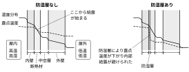

2021年
問題47 結露に関する次の文章の 内に入る語句の組合せとして，最も適当なものはどれか．
暖房時の壁体の内部や表面での結露を防止するには，壁体内において，水蒸気圧の ア 側に イ の低い ウ を設けることが有効である．
アイウ
（1）高い 熱伝導率 断熱材
（2）高い 湿気伝導率 防湿層
（3）低い 湿気伝導率 防湿層
（4）低い 熱伝導抵抗 断熱材
（5）低い 湿気伝導率 断熱材
2021年
問題47 正解（2） 頻出度AAA
断熱材を挟んで，水蒸気分圧の高い側に湿気伝導率の低い層（防湿層）を入れるのが内部結露防止対策の基本である．
物体の表面に結露を生じさせないためには，物体の表面温度をそれに接する空気の露点温度より高く保つ必要がある．そのためには断熱材を使って物体の温度を高く保つか，空気の絶対湿度を下げて露点をできるだけ低く保つことが必要である．
内部結露については，冬季の場合，暖房によって屋内が高温多湿なので，室外に向かって熱流が流れると同時に，水蒸気も水蒸気圧の差によって屋内から屋外に向かって湿流が生じる．壁の部材の温度は内→外に向かって温度が低下し，壁内部の空気の露点温度と交わる点から結露が始まる．これを防ぐには，断熱材の室内側に防湿層を設けて，断熱材の外側の低温部に湿流が回って内部結露するのを防げばよい（2021-47-1図参照）．
夏の場合は，冷房によって屋外側に防湿層が要ることになる．
2021-47-1図 内部結露防止のための防湿層の位置
